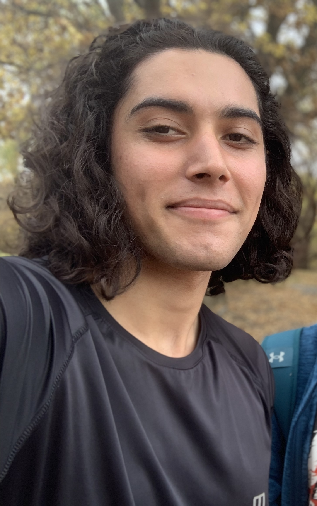

I am a master student at McGill University and Mila (Quebec Artificial Intelligence Institute), in collaboration with David Rolnick.
My research projects are focused on deep learning theory. I am particularly fascinated by the geometrical analysis of deep ReLU networks and
the optimization challenges in machine learning.
My academic journey experiences have been began with Sharif University of Technology and my
research area was on studying the problems on Computational Biology, and Statistical Inference about biological problems.
My background is further enriched by a Minor in Mathematics from Sharif University of Technology. I was honored to work with
Prof. Hamid Reza Rabiee for several years on
lots of interesting projects, for instance one with collaboration with UNSW university of Austrailia with collaboration with
Dr. Hamid Alinejad-Rokny.
Beyond academics, I am an active participant in various extracurricular activities,
including teaching and mentoring roles. My diverse interests, ranging from working out, tennis and hiking
to music, add a unique perspective to my professional endeavors.
Publications & Research Experiences
-
Predicting Survival of Iranian COVID-19 Patients Infected by Various
Variants Including Omicron from Ct Scan Images and Clinical Data Using Deep Neural Networks
Mahyar Ghafoori,Mehrab Hamidi,..., Hamid R Rabiei
Helyion (Springer) 2023
[paper]
-
A New R Package for Categorizing Coding and Non-Coding Genes
Masroor Bayati , Narges RezaieMehrab Hamidi, Maedeh Sadat Tahaei , Hamid Rabiee
[paper]
-
Somatic point mutations are enriched in non-coding RNAs with possible regulatory function in breast cancer
Narges Rezaie, Masroor Bayati,Mehrab Hamidi,..., Hamid R. Rabiee & Hamid Alinejad-Rokny
cummunications biology (Nature) 2022
[paper]
-
Accurate and Rapid Diagnosis of COVID-19 Pneumonia with Batch Effect Removal of Chest CT-Scans and Interpretable Artificial Intelligence
Rassa Ghavami Modegh,Mehrab Hamidi,..., Hamid R Rabiei
[paper]
-
Symmetries of Deep ReLU Networks
This ongoing research explores the function spaces of deep ReLU networks, focusing on uncovering
architectural symmetries. The project is a collaborative effort with
Dr. Elisenda Grigsby and Dr. Kathryn Lindsey
from the Mathematics Department at Boston College.
-
Reverse-Engineering Deep ReLU Networks
This project involved the development of techniques to deduce the weights, biases, and architecture of deep ReLU networks
solely from input-output queries, without prior assumptions about their structure.
This is a github page which you can find the code and
the relevant document.
-
Likelihood-Free Method for Estimating Trait Phenotype Posterior Distributions
We aimed to identify causal SNPs and predict phenotypes for specific traits using likelihood-free Bayesian methods.
The research also extended to applications in Longitudinal Genome-wide Association Studies.
-
Enhancing Variable Selection for Categorical Data Using the Knockoff Method
This study focuses on improving the performance and applicability of variable selection methods for categorical data,
specifically through the enhancement of the Knockoff method.